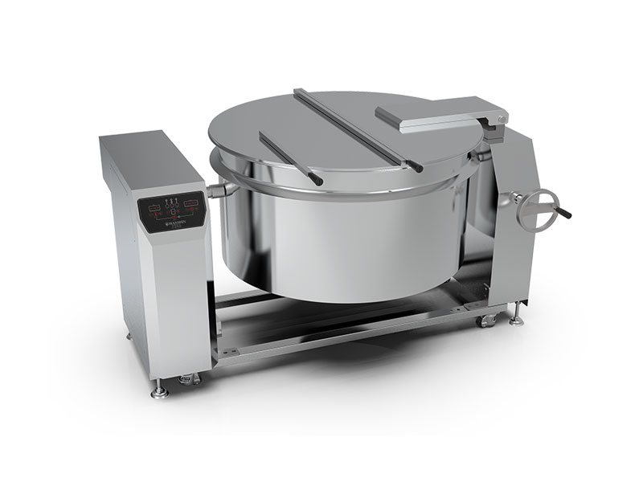
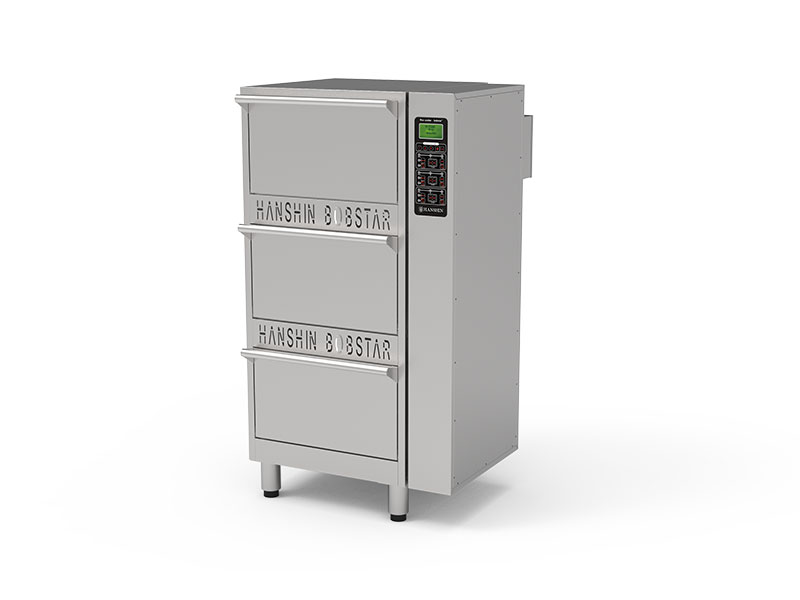
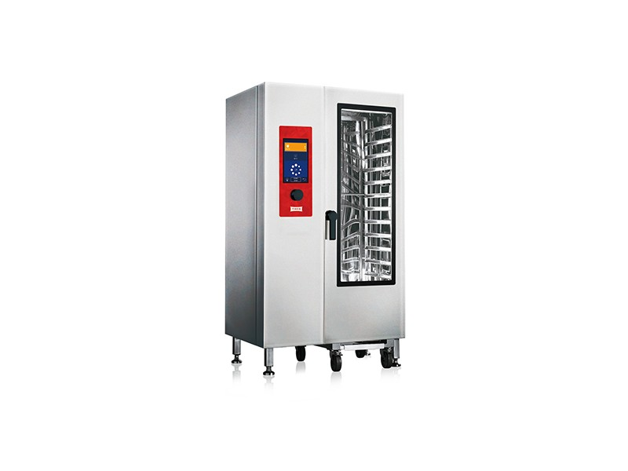
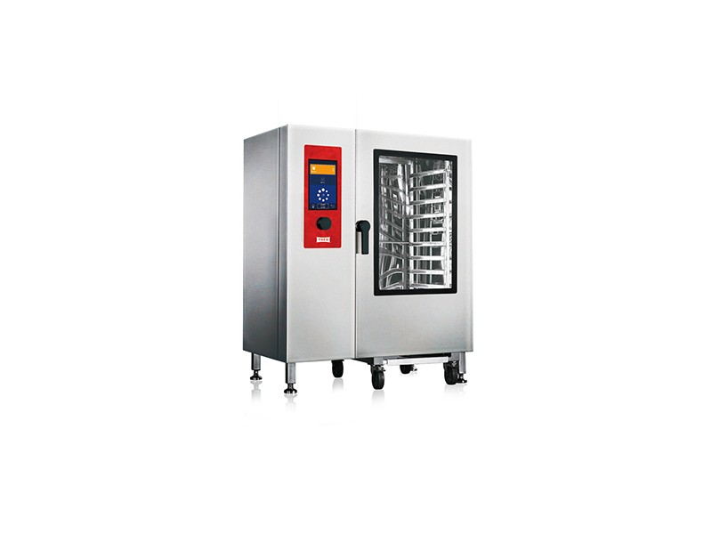
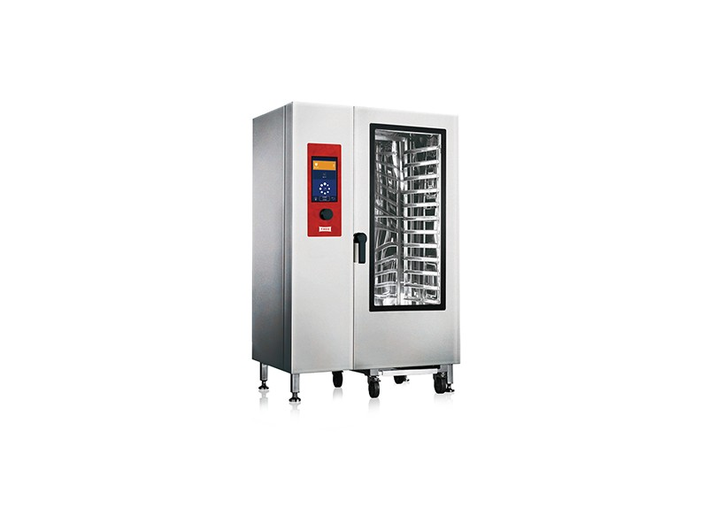

KETTLE / INDUCTION
인덕션 자동 국솥
HIK-500 / HIK-400 / HIK-200 — 500·400·200인용. 스마트 컨트롤과 조리 모드 설정을 지원하는 대용량 국솥 제품군.
제조사 사양 이미지 확인 ↗학교급식 국솥·취반기에서 스팀컨벡션오븐과 위생기자재까지. 제품 사양과 함께 전력·가스·급배수 및 환기 조건을 검토합니다.
상세 자료가 공개된 기종은 해당 페이지로 연결되고 그 밖의 기종은 견적 문의로 안내합니다.
제조사 제공 제품 이미지 및 사양서 기준으로 소개합니다. 상세 규격은 발주 시 최신 사양서를 기준으로 재확인합니다.

HIK-500 / HIK-400 / HIK-200 — 500·400·200인용. 스마트 컨트롤과 조리 모드 설정을 지원하는 대용량 국솥 제품군.
제조사 사양 이미지 확인 ↗
HSR-503I (150인용) / HSR-502I (100인용). 학교급식 운영을 위한 자동 취반과 제어시스템.
제조사 사양 이미지 확인 ↗가스식 국솥과 취반기는 현장 요구에 따라 제품 공급 가능 모델과 설치조건을 별도로 확인합니다.
전기 용량, 배수, 후드·덕트, 동선과 유지관리 공간을 함께 고려합니다.
장비 선정 상담 ↗테오주방 원본 제품 이미지와 「콤비스티머 사양.docx」를 대조했습니다. 20단은 세로형(높이 1,950mm), 24단은 가로형(높이 1,450mm), 40단은 대용량형(높이 1,950mm)으로 구분합니다.

규격: 1,125 × 910 × 1,950 mm
용량: 20 × 1/1GN (530 × 325mm)
급수 / 배수: 20A / 40A
열원: 가스소비량 29.5kW (25,370kcal/h)
사용전원: AC 220V / 1.45kW

규격: 1,125 × 910 × 1,950 mm
용량: 20 × 1/1GN (530 × 325mm)
급수 / 배수: 20A / 40A
열원: 소비전력 29.0kW
사용전원: 3N AC 380V (60Hz)

규격: 1,330 × 910 × 1,450 mm
용량: 24 × 1/1GN (530 × 325mm)
급수 / 배수: 20A / 40A
열원: 가스소비량 29.5kW (25,370kcal/h)
사용전원: AC 220V / 0.75kW

규격: 1,330 × 910 × 1,450 mm
용량: 24 × 1/1GN (530 × 325mm)
급수 / 배수: 20A / 40A
열원: 소비전력 28.6kW
사용전원: 3N AC 380V (60Hz)

규격: 1,330 × 910 × 1,950 mm
용량: 40 × 1/1GN (530 × 325mm)
급수 / 배수: 20A / 40A
열원: 가스소비량 58.0kW (49,880kcal/h)
사용전원: AC 220V / 1.45kW

규격: 1,330 × 910 × 1,950 mm
용량: 40 × 1/1GN (530 × 325mm)
급수 / 배수: 20A / 40A
열원: 소비전력 57.5kW
사용전원: 3N AC 380V (60Hz)
제품사진: 테오주식회사 제공 자료(한빛산업 사용허락 확인). 같은 용량의 가스·전기식은 제조사 보관 파일에서 공통 외관 이미지가 사용되었습니다. 실제 모델별 외관과 상세 사양은 발주 시 최신 제조사 자료로 확인합니다.
제조사 원본 제품자료와 한빛산업의 기술 아카이브를 기준으로 정리한 확장 카탈로그입니다. 자세한 제품 설명과 실제 사진을 확인하세요.
TUEF-600·TUEF-1100 모델별 설치 조건, TUEF-800 실물사진과 기술 특징을 소개합니다.
제품사진·사양 보기 ↗살균 및 위생 설비는 용도와 적용공간, 설치 전력 및 위생관리 방식에 따라 구성이 달라집니다.
보관된 위생기기 설명서의 모델별 명세는 추가 대조가 필요하므로 구체적 살균 효능이나 처리량을 추정하여 표시하지 않습니다.
위생 설비 문의 ↗장비의 규격과 열원뿐 아니라 작업 동선·후드·공조·급배수 계획이 서로 맞아야 합니다. KFOODTECH는 주방 컨설팅부터 설비 설치와 사후관리까지 연결합니다.